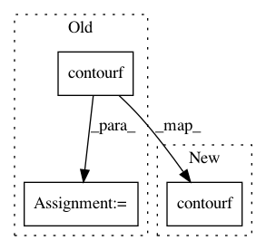

7484e560c64a0505d10512feaa999a1d960f07fc,lib/mpl_toolkits/tests/test_mplot3d.py,,test_contourf3d,#,89
Before Change
fig = plt.figure()
ax = fig.gca(projection="3d")
X, Y, Z = axes3d.get_test_data(0.05)
cset = ax.contourf(X, Y, Z, zdir="z", offset=-100, cmap=cm.coolwarm)
cset = ax.contourf(X, Y, Z, zdir="x", offset=-40, cmap=cm.coolwarm)
cset = ax.contourf(X, Y, Z, zdir="y", offset=40, cmap=cm.coolwarm)
ax.set_xlim(-40, 40)
ax.set_ylim(-40, 40)
After Change
fig = plt.figure()
ax = fig.gca(projection="3d")
X, Y, Z = axes3d.get_test_data(0.05)
ax.contourf(X, Y, Z, zdir="z", offset=-100, cmap=cm.coolwarm)
ax.contourf(X, Y, Z, zdir="x", offset=-40, cmap=cm.coolwarm)
ax.contourf(X, Y, Z, zdir="y", offset=40, cmap=cm.coolwarm)
ax.set_xlim(-40, 40)
ax.set_ylim(-40, 40)
In pattern: SUPERPATTERN
Frequency: 3
Non-data size: 3
Instances
Project Name: matplotlib/matplotlib
Commit Name: 7484e560c64a0505d10512feaa999a1d960f07fc
Time: 2019-04-17
Author: anntzer.lee@gmail.com
File Name: lib/mpl_toolkits/tests/test_mplot3d.py
Class Name:
Method Name: test_contourf3d
Project Name: matplotlib/matplotlib
Commit Name: 7484e560c64a0505d10512feaa999a1d960f07fc
Time: 2019-04-17
Author: anntzer.lee@gmail.com
File Name: lib/mpl_toolkits/tests/test_mplot3d.py
Class Name:
Method Name: test_contourf3d_fill
Project Name: matplotlib/matplotlib
Commit Name: 7484e560c64a0505d10512feaa999a1d960f07fc
Time: 2019-04-17
Author: anntzer.lee@gmail.com
File Name: lib/matplotlib/tests/test_axes.py
Class Name:
Method Name: test_contour_hatching